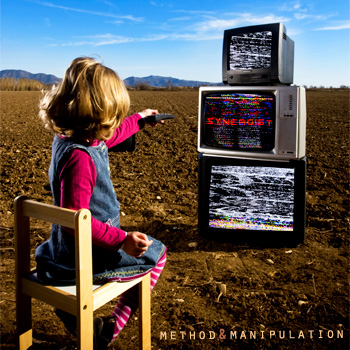

Method & Manipulation
by Synergist - Lyrics by CutcH*

well there's a strange
new kind of war
you may think that you're safe
its already in your home
so be afraid
living in this world
never try to escape
it's not safe inside these walls
you'll feel it again
controlled by fear, fall into their service and then
with absence of thought,
if you break down and let them into your head
you're already dead
now there's a plague of hypnotic horror
our eyes are transfixed
and we're the hive-mind hoard
and if you think you could be something more
you're completely insane
that's right, you're in the wrong
you'll feel it again
controlled by fear, fall into their service and then
with absence of thought,
if you break down and let them into your head
you're already dead
and this is the waking of the fallen
get out of our head
walking undead
your lying has caused this unrest
this is the call of the forgotten
get out of our head
walking undead
you're lying, has caused this unrest
so get out of my head
well there's a violent fate that will befall us all
there's already a patsy in place, ready to take that fall
you'll never see through this blinding fog,
we report, you decide
you know the sky's about to fall
you'll feel it again
controlled by fear, fall into their service
with absence of thought,
if you break down and let them into your head
you're already dead
and its the waking of the fallen
get out of our head
walking undead
your lies have caused this unrest
this is the call of the forgotten
get out of our head
you're lying to get into my head
so get out of my head *CutcH is Craig McCutcheon |